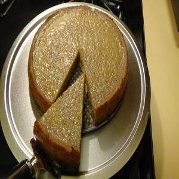

Potato Pudding
Potato pudding is a traditional Jamaican dessert made with grated potatoes, coconut milk, and warm spices. It has a moist and dense texture with a hint of sweetness, making it a delightful treat for any occasion.
Ingredients
- 4 large potatoes, peeled and grated
- 1 cup brown sugar
- 1 cup all-purpose flour
- 1 teaspoon baking powder
- 1/2 teaspoon ground cinnamon
- 1/2 teaspoon ground nutmeg
- 1/4 teaspoon salt
- 1 cup coconut milk
- 1/4 cup melted butter
- 1 teaspoon vanilla extract
- 1/2 cup raisins (optional)
Instructions
- Preheat oven to 350°F (175°C) and grease a baking dish.
- In a large bowl, combine the grated potatoes, brown sugar, flour, baking powder, cinnamon, nutmeg, and salt.
- Add the coconut milk, melted butter, vanilla extract, and raisins (if using) to the bowl. Mix well to combine all the ingredients.
- Pour the mixture into the greased baking dish and spread it evenly.
- Bake in the preheated oven for about 1 hour or until the top is golden brown and a toothpick inserted into the center comes out clean.
- Remove from the oven and let it cool for a few minutes before serving.
- Slice the potato pudding into squares or wedges and serve warm or at room temperature.